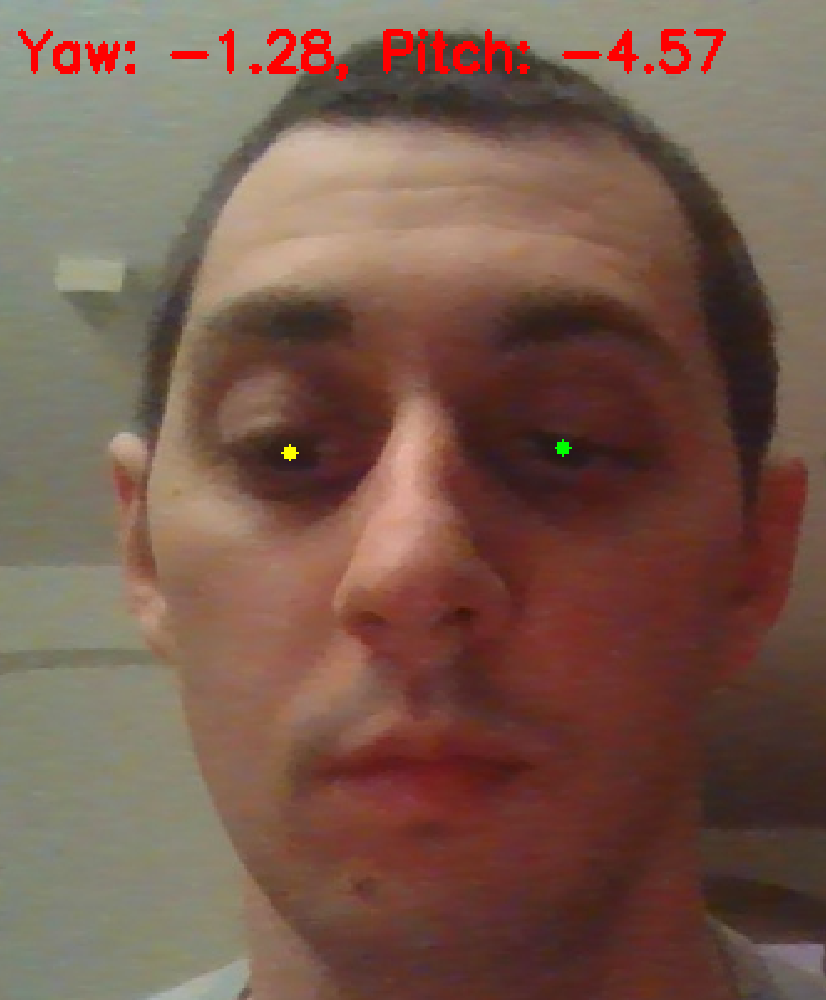
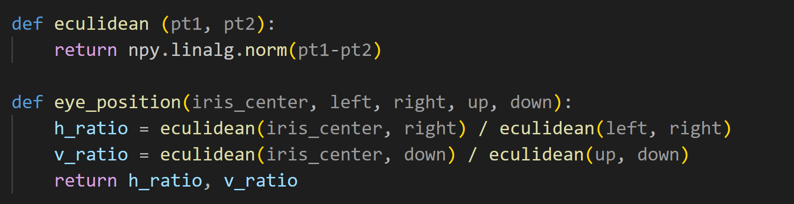
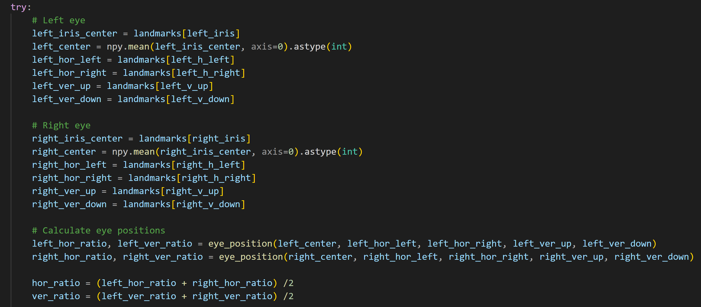
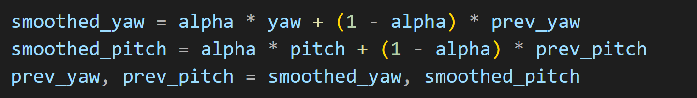

Eye Control Drone
This project was designed for controlling a drone using eye motions. The code utilizies Mediapipe's iris tracking capabilities to capture the user's iris movements and translate them into control commands which are displayed on the screen as yaw and pitch angles. The system is designed to allow users to control a drone hands-free and allow those with limited mobility to operate a drone.

Demo
The demo demonstrates the eye control drone system in action showing the detection of the user's iris movements and the control commands reflecting those movements. The video showcases the potential of eye tracking technology for hands-free control of drones.
Gallery


